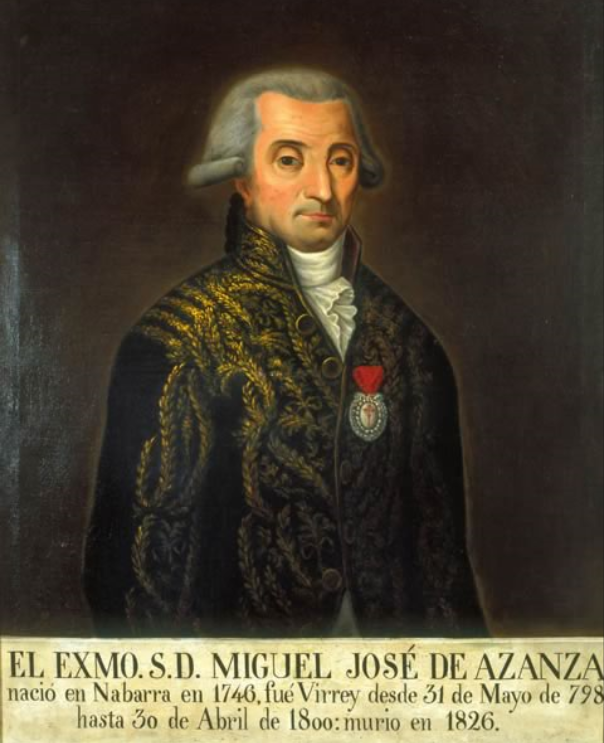
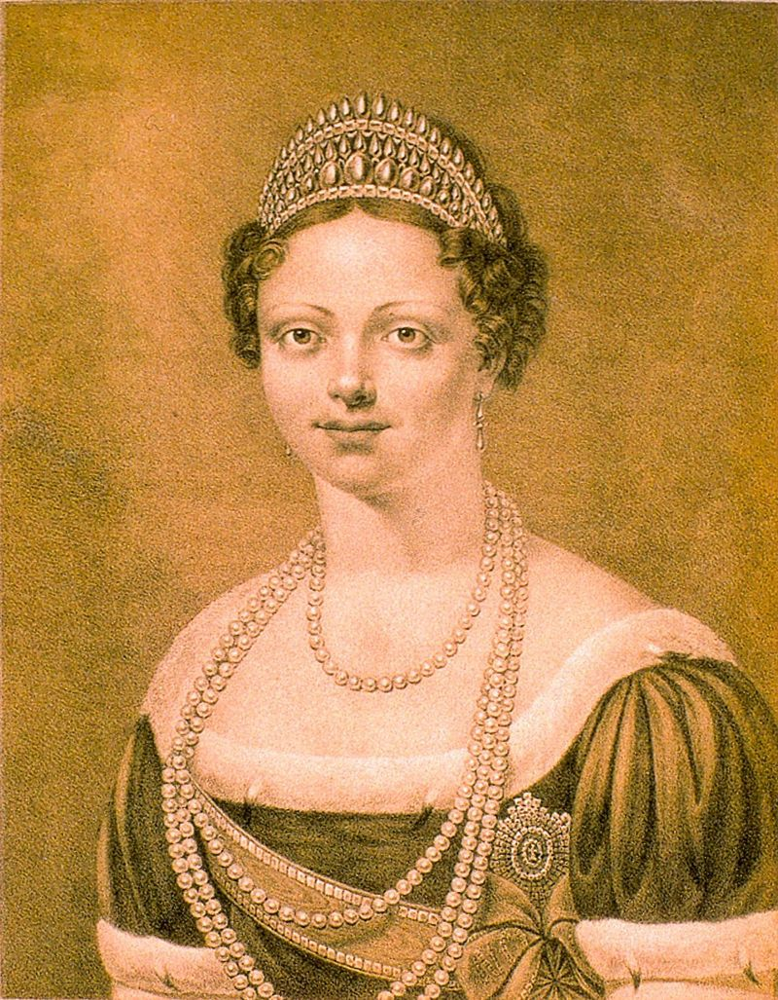
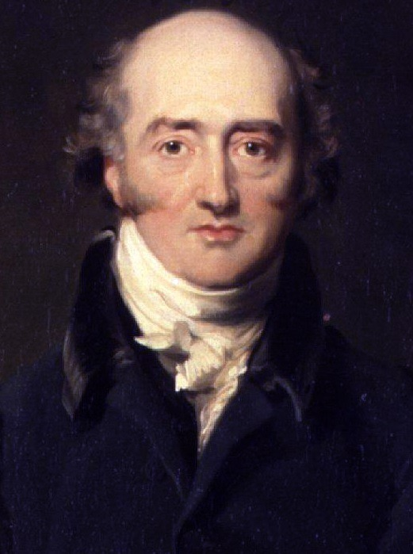
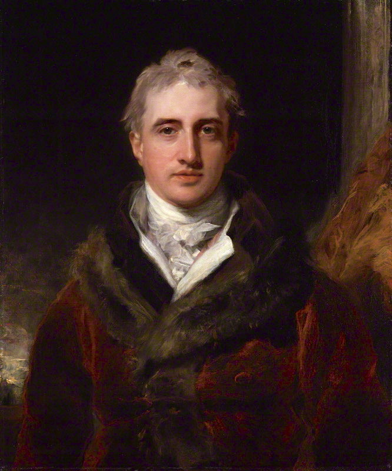
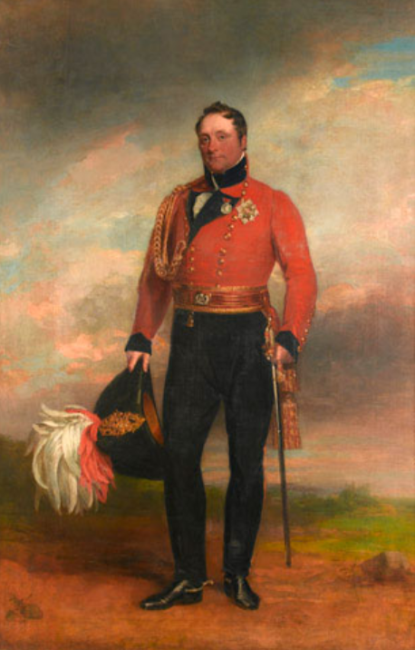
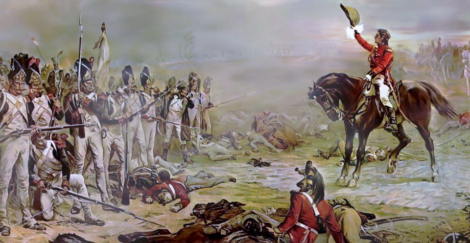

1810년 포르투갈 침공의 서막 - 봉쇄와 결투
게시: 2018-10-08T06:30:00+09:00
여태까지 1810년에 있었던 이런저런 사건들, 즉 나폴레옹의 새장가, 사탕무 설탕 공장의 건설, 베르나도트의 스웨덴 왕세자 책봉 등을 보셨습니다. 이렇게 보면 1810년은 피와 화약 연기로 점철되었던 황제 나폴레옹의 나날 중 드물게 평화로운 시절처럼 보입니다. 실제로도 비교적 그랬습니다. 그러나 스페인에서는 이야기가 전혀 달랐습니다.
오히려 1810년 들어 스페인 민중들의 대프랑스 항쟁은 그 기세가 더 격렬해졌습니다. 이는 반나폴레옹 봉기가 곳곳에서 성공을 거두었기 때문이 아니었습니다. 상황은 정반대로서, 웰링턴의 영국군이 탈라베라(Talavera) 전투 이후 포르투갈로 물러가자 무능력한 스페인 봉기군은 차근차근 프랑스군에게 격파되고 있었습니다. 상황이 이러면 스페인 민중들은 용기를 잃고 굴복할 만도 할텐데, 왜 오히려 더 격렬하게 저항을 했을까요 ?
상황은 나폴레옹이 본의 아니게 더 악화시켰다고 할 수 있었습니다. 1810년 나폴레옹은 저항을 그치지 않는 스페인에 대해 질려버린 상태였습니다. 스페인 국왕이자 나폴레옹의 형인 조제프가 파리에 파견한 외무장관인 산타페 공작 아산사(Miguel José de Azanza, duque de Santa Fe)가 나폴레옹의 튈르리 궁을 찾았을 때, 그에게 들이밀어진 것은 조제프의 퇴위 조서 초안이었습니다. 나폴레옹은 조제프 보고 거기에 서명을 하라고 요구할 셈이었습니다. 기억들 하시겠습니다만, 동생 루이를 국왕으로 앉혀 놓았던 네덜란드를, 나폴레옹은 1810년 7월 실제로 침공하여 루이를 강제 폐위시키고 프랑스의 일부로 합병시켜버립니다. 그는 스페인에 대해서도 왕정을 아예 폐지해버리고 프랑스의 일부로 합병해버릴 계획었습니다.
문제는 그 계획안 문서를 가지고 마드리드로 가던 연락 장교가 스페인 게릴라들에게 요격당해 살해되고 아직 암호화 되지 않았던 시절의 그 문서가 게릴라들을 거쳐 영국 손에 들어가버렸다는 것이었습니다. 당연히 영국은 그 문서를 친절하게 스페인어로 번역까지 해서 곳곳에 뿌려댔고, 이는 그렇쟎아도 프랑스에 대해 이를 갈던 스페인 민중들을 더욱 들끓게 했습니다.

(산타페 공작 아산사입니다. 그는 군인 출신의 외교관으로서, 1790년대 후반에는 멕시코 총독을 지내기도 했습니다. 나중에 그는 나폴레옹 정권에 협력했고 조제프는 그를 산타페 공작에 봉했습니다만, 그러지 않는 것이 좋을 뻔 했습니다. 부르봉 왕가의 복귀와 함께 그는 사형 선고를 받았고, 그는 조제프가 프랑스로 도주할 때 함께 프랑스로 도망쳐야 했습니다. 그는 1826년 빈곤 속에서 외롭게 죽었습니다. 친일파, 아니 친불파에게 알맞는 최후라고 할 수 있지요.)
그렇다고 그런 문서 유출 때문에 나폴레옹이 조제프를 루이처럼 폐위 시키는 것을 주저한 것은 아니었습니다. 그런 발표를 하려면 스페인 전역을 손에 넣어야 하는데, 그것이 아직 완료되지 않았던 것입니다. 나폴레옹은 하찮은 스페인 따위가 프랑스의 그랑 다르메에 대해 이렇게 질기게 저항할 수 있는 것은 저주스러운 영국 때문이라고 판단하고 있었습니다. 트라팔가에서 프랑스-스페인 연합함대가 넬슨에게 궤멸된 이후 손에 닿을 수 없는 곳이 된 영국에 대해, 나폴레옹은 더 큰 규모의 전쟁을 벌이고 있었습니다. 바로 대륙 봉쇄령이었지요. 그런데 이 대륙 봉쇄령은 좀처럼 승기가 보이지 않는 전쟁이었습니다. 명색이 위성국가라는 것들이 나폴레옹의 빅 픽처에 협력하지 않고 여기저기서 돈에 눈이 멀어 영국 상품을 사들이고 있었던 것입니다. 이래서는 안 되겠다고 판단한 나폴레옹이 취한 조치는 더 강력한 그물망을 치는 것이었습니다. 영국과의 밀무역을 가장 활발하게 벌이던 네덜란드와 옛 한자 동맹 지역들, 즉 북부 독일 해안 지대의 소공국들의 정권을 폐위시켜 버리고 모두 프랑스의 일부로 편입시켜버린 것이지요. 1810년은 나폴레옹 제국이 가장 넓어진 해이기도 합니다만, 그 배경은 영국과의 경제 전쟁에서 패배하고 있다는 초조함이 있었던 것입니다.
스페인 문제를 해결하기 위한 이 과격한 해결책은 필연적으로 또다른 문제를 낳았습니다. 나폴레옹은 당시엔 별로 대단치 않게 여겼을지 몰라도 나중에는 이것이 결국 그의 제국 전체를 몰락시키는 단초가 됩니다. 나폴레옹이 그런 식으로 무자비하게 일방적으로 쫓아낸 소공국들 중에는 올덴부르크(Oldenburg) 공작령도 있었습니다. 그런데 그 올덴부르크 공작의 작은 아들이 바로 러시아 짜르 알렉산드르 1세가 애지중지하던 여동생 예카테리나(Ekaterina Pavlovna) 공주의 남편 게오르그(Georg of Oldenburg)였던 것입니다.
알렉산드르는 여러차례에 걸친 편지를 통해 자신의 매제에 대한 폭압적인 강탈 조치를 항의했으나 나폴레옹은 막무가내였습니다. 어쩌면 이건 나폴레옹이 지나치게 오만하여 무심했다기 보다는, 오히려 그가 지나치게 졸장부처럼 옹졸하게 나온 것일 수도 있습니다. 기억들 하시겠습니다만 2년 전인 1808년 에르푸르트 회담에서 나폴레옹이 알렉산드르에게 여동생을 자신의 새 신부로 달라고 은근히 메시지를 던졌으나, 알렉산드르는 오히려 그 아끼는 여동생을 볼썽 사나울 정도로 서둘러 다른 귀족에게 시집 보내버린 적이 있었지요. 그때 그 여동생이 바로 예카테리나였습니다. 나폴레옹은 그때 아무런 내색을 하지 않았으나, 그것을 큰 모욕으로 받아들이고 이런 식으로 앙갚음한 것일 수도 있습니다. 어쨌거나, 에르푸르트 회담 때만 해도 세상 둘도 없는 친구 사이 같았던 나폴레옹과 알렉산드르는 이 사건을 계기로 상호간의 불신과 반목이 점점 심해졌고, 이는 결국 1812년 러시아 침공과 그에 따른 나폴레옹의 몰락으로 이어지게 됩니다.

(대체 예카테리나 공주가 얼마나 아름다웠길래 이 난리가 났는가를 궁금해하시는 분들을 위해서 다시 보여드립니다. 두 그림 모두 동일 인물인데, 글쎄요, 아래 그림을 그린 화가는 아마 능지처참을 당하지 않았을까 싶습니다만, 어느 쪽이 더 실물에 가까운지는 모르겠습니다.)
한편, 나폴레옹이 이렇게 무리수를 두어가면서까지 이베리아 반도에서 몰아내려 했던 웰링턴의 영국군도 마냥 룰루랄라할 상황은 아니었습니다. 나폴레옹 전쟁에 있어서 영국의 기본적 전략은 크게 2가지 방향 사이에서 흔들거리고 있었습니다. 하나는 캐닝(George Canning)이 주도하는 대륙내 동맹국에 대한 보조금 위주의 전략이었고, 다른 하나는 캐슬레이(Robert Stewart, Viscount Castlereagh)가 과감히 밀어붙인 직접 대륙으로 원정군을 파견하는 것이었습니다. 1806년 이탈리아 남부 나폴리 왕국 및 시실리 섬으로의 원정이나, 1809년 네덜란드로의 월체런(Walcheren) 원정, 그리고 이베리아 반도 원정 등이 그 대표적인 원정들인데, 이것들은 1805년부터 1809년까지 캐슬레이가 국방부 장관(Secretary of State for War and the Colonies)을 맡고 있었기 때문에 가능한 일이었습니다. 그러나 문제는 그 결과가 다 신통치 않았다는 것이지요. 나폴리 왕국에 대한 원정은 1806년 가에타(Gaeta) 포위전의 패전과 함께 결국 뮈라(Joachim Murat)를 나폴리 왕으로 만들어주면서 끝나버렸고, 이베리아 원정도 무어(John Moore) 경이 1809년 1월 코루냐(Corunna) 전투에서 전사하며 간신히 영국군 대부분이 탈출시킨 것에 만족해야 했습니다. 가장 최근의 1809년 월체런 원정도 사실상 참패로 끝나버렸지요. 이로 인해 영국 내에서는 대체 영국 육군은 뭐하는 종자들인가에 대한 비난이 들끓고 있었습니다.

(외무장관 조지 캐닝입니다. 이 양반이 보조금 위주의 전략을 썼다고 해서 결코 평화주의자로 오해해서는 안됩니다. 가령 1807년 덴마크 해군 함대를 보관해주겠다며 덴마크를 침공한 것도 이 양반이 주도한 작전이었습니다.)

(국방장관 캐슬레이 자작입니다. 외모로 보면 대머리 캐닝과의 대결에서 완승했다고 할 수 있지요. 그는 나폴레옹 전쟁 내내 큰 공을 세웠다고 할 수 있으나, 이후 비엔나 회담에서 유럽 대륙이 반동 체제로 회귀하도록 내버려 두었다는 비난을 받았습니다. 그 뿐만 아니라 국내에서도 여러가지 우클릭 정책을 옹호하여 크게 비난을 받았습니다. 가령 피털루 학살 관련해서도 욕을 잔뜩 먹었지요.)
특히 월체런 원정의 실패는 외무장관 캐닝과 국방장관 캐슬레이 사이에 심각한 불화를 일으켰습니다. 이 둘은 서로가 서로의 부당한 간섭 또는 부실한 전략 비전 등으로 작전을 망쳤다고 비난해댄 것입니다. 결국 이들의 갈등은 아직 월체런에 비실비실한 영국군이 상당수 남아 있던 1809년 9월, 이 둘 사이의 결투로 이어집니다. 둘 다 군인은 아니었고 특히 캐닝은 이 결투 이전에는 총을 한번도 쏘아본 적 없을 정도로 순한 사람이었는데, 캐슬레이의 도전에 캐닝은 꼬리를 말아넣을 수가 없어서 응한 것이지요. 결국 캐닝의 탄환은 저 멀리 빗나갔고 캐슬레이의 탄환은 캐닝의 넓적다리에 명중하는 정도로 이 결투는 마무리되었습니다. 그러나 명성이 자자하고 막중한 책임을 지고 있는 장관들이 서로 총질을 해댄 이 결투 사건에 대해 비난이 들끓었고, 결국 이 둘은 모두 사임을 해야 했습니다.
이로써 이베리아 반도의 영국군 원정대는 본국에서의 지지 발판을 잃을 수도 있는 위기에 처해버렸습니다. 그러나 웰링턴에게는 천만다행으로 캐닝의 후임은 웰링턴의 형 리처드 웰슬리(Richard Wellesley, 1st Marquess Wellesley)가 맡게 되었습니다. 안 좋게 흘러가던 상황이 역전되어 웰링턴에게는 든든한 배경이 생긴 셈이었지요. 과연 팔은 안으로 굽는다고, 웰슬리 후작은 이베리아 반도에서의 웰링턴의 작전을 전폭적으로 지원했습니다. 특히 대륙 봉쇄령에 의해 영국의 무역 상황이 갈 수록 안 좋아지는 상황에서, 이베리아 반도를 통한 무역이 더욱 중요해졌다는 것을 내각에 설득하여 이베리아 원정대에 점차 병력을 증강하도록 했습니다. 웰링턴이 탈라베라에서 승리를 거두고도 허겁지겁 포르투갈로 후퇴해야 했던 이유는 술트의 측면 위협 때문이었지만 근본적인 이유는 프랑스군보다 영국군 병력이 너무 작다는 것이었습니다. 이제 웰링턴은 힐(Rowland Hill, 1st Viscount Hill) 장군이 영국에서 데리고 온 증원군을 받아 거의 5만에 가까운 병력을 지휘하게 되었습니다. 5만이면 병력수가 부족했던 영국 육군에서는 물론 엄청난 대군이었고, 프랑스 그랑 다르메에서조차도 거의 1개 군(armee) 수준의 큰 병력이었습니다.

(롤랜드 힐 장군입니다. 그는 롤리사 전투와 비메이루 전투 때부터 웰링턴을 따라 종군했고, 나중에 워털루 전투에도 참전했습니다.)

(워털루 전투에서 마지막까지 부질없이 저항하던 황실 근위대에게 항복을 권유한 것도 롤랜드 힐 장군이라고 합니다.)
한편, 나폴레옹도 그냥 대륙 봉쇄령이 계획대로 작용하여 영국 중앙은행의 지하 금고에서 마지막 기니 금화 한닢까지 다 털려 나올 때까지 마냥 기다리고만 있었던 것은 아니었습니다. 당시 스페인 곳곳은 여전히 반란군 손에 있었고, 특히 스페인 남부 안달루시아 지방 전체가 스페인군 수중에 있는 상태였습니다만, 나폴레옹은 안달루시아 정복보다 오히려 포르투갈에 웅크리고 앉은 웰링턴의 영국군을 격파하는 것이 스페인 완전 정복에 더 시급하다고 판단했습니다. 그래서 그는 술트(Soult)로 하여금 안달루시아를 치게 하고는, 네(Ney), 쥐노(Junot), 레이니에(Reynier)의 3개 군단을 모아 포르투갈로 진격하도록 했습니다. 이렇게 모인 병력은 서류상으로는 8만, 실제로는 약 5만 정도였습니다. 그리고 이 3개 군단장을 통솔할 포르투갈 원정군 사령관으로 자신의 휘하에 있는 지휘관 중 최고의 능력자를 임명하여 그 무게를 더했습니다. 자타가 공인하는 나폴레옹 제국의 제2인자, 바로 위풍당당 마세나(Andre Massena)였습니다.
여태까지 웰링턴이 상대했던 프랑스군 지휘관은 누가 봐도 1진이라고는 할 수 없던 쥐노, 주르당, 세바스티아니, 빅토르 정도였습니다. (술트와의 제2차 포르투 전투는 제대로 된 대결이라고 하긴 곤란했지요.) 하지만 마세나는 그들과는 차원이 다른 진짜 1진급 지휘관으로서 나폴레옹의 오른팔격 원수였고, 다부는 물론 전사해버린 장 란보다도 더 뛰어난 지휘관으로 자타가 인정하는 인물이었습니다. 과연 웰링턴은 마세나를 상대로 해서도 승리를 이끌어 낼 수 있었을까요 ?
Source : The Life of Napoleon Bonaparte by William M. Sloane
https://en.wikipedia.org/wiki/Miguel_Jos%C3%A9_de_Azanza,_Duke_of_Santa_Fe
https://en.wikipedia.org/wiki/Robert_Stewart,_Viscount_Castlereagh
https://en.wikipedia.org/wiki/George_Canning
https://en.wikipedia.org/wiki/Richard_Wellesley,_1st_Marquess_Wellesley
https://en.wikipedia.org/wiki/Walcheren_Campaign
https://en.wikipedia.org/wiki/Rowland_Hill,_1st_Viscount_Hill
https://en.wikipedia.org/wiki/Duke_George_of_Oldenburg
https://en.wikipedia.org/wiki/Siege_of_Gaeta_(1806)